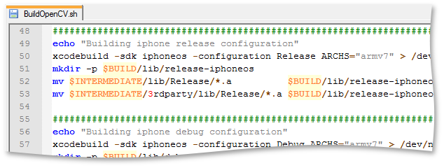

My first post in this blog was about building OpenCV for iOS devices (iPhone, iPad, iPod and so on). But the build process that i used is not trivial at all. I received a lot of feedbacks and questions about building OpenCV, setting up XCode build environment. Today i made your life much easier. I have a gift - a build script, which will **build OpenCV **library for your iPhone, iPad, iPod or any other iOS based Apple device right in one click! Update: Now build script supports XCode 4 and iOS 4.3 SDK Sounds cool, yeah? Well, It’s all true. Actually, my script does exactly the same things as i mentioned in original article. But without user interaction.
This post is outdated.
Current version of OpenCV supports iOS toolchain and can be build in much easier way. You are welcome to read this post for educational purposes. It’s 99.9% chance that you will not be able to build OpenCV using instructions decribed here.
Let’s build it!
We start, as usual, from getting a fresh source code from OpenCV repository:
svn co http://code.opencv.org/svn/opencv/trunk
Or, if you already have checked out in the past, run svn update command:
svn update
To start build process you should call build script with two required arguments: directory, where OpenCV sources located and directory, where libraries and headers will be places:
sh BuildOpenCV.sh trunk/opencv/ opencv_ios_build
Hit Enter and take a rest - it will take 5-10 minutes. There will be compilation errors. Something like:
The following build commands failed:
opencv_highgui:
CompileC cap_qtkit.o cap_qtkit.mm normal armv7 objective-c++ com.apple.compilers.gcc.4_2
opencv_ts:
CompileC ts_gtest.o ts_gtest.cpp normal armv7 c++ com.apple.compilers.gcc.4_2
(2 failures)
It’s okay. For now, OpenCV has to official iOS support, so some parts of code will cause compilation errors (highgui module). Maybe in future this will change, but ignore them now. If you are getting other errors, it looks like either you doing something wrong, or repository build is broken. When all is done, your build directory should looks like this:
opencv_build_ios_4771
|-include
|---opencv
|---opencv2
|-----calib3d
|-----contrib
|-----core
|-----features2d
|-----flann
|-----highgui
|-----imgproc
|-----legacy
|-----ml
|-----objdetect
|-----ts
|-----video
|-lib
|---Release-iphonesimulator
|---debug-iphoneos
|---debug-iphonesimulator
|---debug-universal
|---release-iphoneos
|---release-universal
Lib folder contains all necessary static libraries, Include - OpenCV headers.
How it works
- Configure OpenCV using CMake. I disabled enabled by default options like SSE, SSE2, support of video input libraries, because they are not actual for iOS
- Run batch build process from command line using xcodebuild tool. With their help we build all necessary libs.
- Copy libraries to appropriate directories and create universal ones.
- Run Install target to get OpenCV headers.
Script source
Here is script listing. Don’t start copy&pasting it, there are download link at the end of the post.
#!/bin/bash
################################################################################
# This script will create universal binaries for OpenCV library for
# iOS-based devices (iPhone, iPad, iPod, etc).
# As output you obtain debug/release static libraries and include headers.
#
# This script was written by Eugene Khvedchenya
# And distributed under GPL license
# Support site: http://computer-vision-talks.com
################################################################################
if [ $# -ne 2 ]
then
echo "Error in $0 - Invalid Argument Count"
echo "Syntax: $0 [OpenCV source directory] [Build destination directory]"
echo "If the destination directory already exists, it will be overwritten!"
exit
fi
# Absolute path to the source code directory.
D=`dirname "$1"`
B=`basename "$1"`
SRC="`cd \"$D\" 2>/dev/null && pwd || echo \"$D\"`/$B"
# Absolute path to the build directory.
D=`dirname "$2"`
B=`basename "$2"`
BUILD="`cd \"$D\" 2>/dev/null && pwd || echo \"$D\"`/$B"
INTERMEDIATE=$BUILD/tmp
IOS_INSTALL_DIR=$INTERMEDIATE/ios-install
MAC_INSTALL_DIR=$INTERMEDIATE/mac-install
PATCHED_SRC_DIR=$INTERMEDIATE/ios-sources-patched
IOS_BUILD_DIR=$INTERMEDIATE/ios-build
MAC_BUILD_DIR=$INTERMEDIATE/mac-build
echo "OpenCV source :" $SRC
echo "Build directory :" $BUILD
echo "Intermediate dir:" $INTERMEDIATE
echo "Patched source :" $PATCHED_SRC_DIR
OPENCV_MODULES_TO_BUILD=(zlib libjpeg libpng libtiff libjasper opencv_lapack opencv_calib3d opencv_core opencv_features2d opencv_flann opencv_imgproc opencv_legacy opencv_contrib opencv_ml opencv_objdetect opencv_video)
################################################################################
# Clear the old build and recompile the new one.
rm -rf $BUILD
################################################################################
# Now we build OpenCV with macosx sdk.
# This will build opencv INSTALL target, which will
# copy headers to the $BUILD/include directory.
echo "Installing OpenCV headers"
mkdir -p $MAC_BUILD_DIR
cd $MAC_BUILD_DIR
cmake -DCMAKE_INSTALL_PREFIX=$MAC_INSTALL_DIR \
-DENABLE_SSE=NO \
-DENABLE_SSE2=NO \
-DBUILD_TESTS=OFF \
-DBUILD_EXAMPLES=NO \
-DBUILD_NEW_PYTHON_SUPPORT=NO \
-DWITH_EIGEN2=NO \
-DWITH_PVAPI=NO \
-DWITH_OPENEXR=NO \
-DWITH_QT=NO \
-DWITH_QUICKTIME=NO \
-DOPENCV_BUILD_3RDPARTY_LIBS=YES \
-G Xcode $SRC > /dev/null
mkdir $BUILD/include
xcodebuild -sdk macosx -configuration Release -parallelizeTargets -target install > /dev/null
mv $MAC_INSTALL_DIR/include/* $BUILD/include
################################################################################
# We have to patch OpenCV source to exclude several modules form build
# because they prevent building other libs.
echo "Patching OpenCV sources"
mkdir -p $PATCHED_SRC_DIR
cp -R $SRC/ $PATCHED_SRC_DIR
sed '/add_subdirectory(ts)/d' $PATCHED_SRC_DIR/modules/CMakeLists.txt > $PATCHED_SRC_DIR/modules/CMakeLists.txt.patched
mv $PATCHED_SRC_DIR/modules/CMakeLists.txt.patched $PATCHED_SRC_DIR/modules/CMakeLists.txt
sed '/add_subdirectory(highgui)/d' $PATCHED_SRC_DIR/modules/CMakeLists.txt > $PATCHED_SRC_DIR/modules/CMakeLists.txt.patched
mv $PATCHED_SRC_DIR/modules/CMakeLists.txt.patched $PATCHED_SRC_DIR/modules/CMakeLists.txt
################################################################################
# Configure OpenCV
mkdir -p $IOS_BUILD_DIR
cd $IOS_BUILD_DIR
cmake -DCMAKE_INSTALL_PREFIX=$IOS_INSTALL_DIR \
-DENABLE_SSE=NO \
-DENABLE_SSE2=NO \
-DBUILD_TESTS=OFF \
-DBUILD_SHARED_LIBS=NO \
-DBUILD_NEW_PYTHON_SUPPORT=NO \
-DBUILD_EXAMPLES=NO \
-DWITH_EIGEN2=NO \
-DWITH_PVAPI=NO \
-DWITH_OPENEXR=NO \
-DWITH_QT=NO \
-DWITH_QUICKTIME=NO \
-DOPENCV_BUILD_3RDPARTY_LIBS=YES \
-G Xcode $PATCHED_SRC_DIR > /dev/null
################################################################################
# Build for device armv6 architecture :
echo "Building iphone release armv6 configuration"
for target in ${OPENCV_MODULES_TO_BUILD[*]}
do
echo "\tbuilding " $target
xcodebuild -sdk iphoneos -configuration Release -parallelizeTargets ARCHS="armv6" -target $target > /dev/null
done
mkdir -p $BUILD/lib/release-iphoneos-armv6
mv $IOS_BUILD_DIR/lib/Release/*.a $BUILD/lib/release-iphoneos-armv6 > /dev/null
mv $IOS_BUILD_DIR/3rdparty/lib/Release/*.a $BUILD/lib/release-iphoneos-armv6 > /dev/null
echo "Building iphone debug armv6 configuration"
for target in ${OPENCV_MODULES_TO_BUILD[*]}
do
echo "\tbuilding " $target
xcodebuild -sdk iphoneos -configuration Debug -parallelizeTargets ARCHS="armv6" -target $target > /dev/null
done